Awareness of Data Protection
Report
Fieldwork: Nov 2019
Writing of report: Nov 2019
Survey developed for the final project in DAPE1200 - Web development and inclusive design by Ana Flávia Vital, Andrea Bjørge, Anine Schjøth Semmen, Jannicke Merete Svendsen, Terese Bjørseth and Yvan Bayisabe.
OsloMet
Fall 2019 - Oslo, Norway
Introduction
Between the 1st of November 2019 and the 12th of November 2019, an informal survey was conducted through Google Sheets, as part of the final project in DAPE1200 - Web development and inclusive design. The group of OsloMet students composed by Ana Flávia Vital, Andrea Bjørge, Anine Schjøth Semmen, Jannicke Merete Svendsen, Terese Bjørseth and Yvan Bayisabe had as its goal to understand the product that was being designed was, in fact, a solution to a real problem. In order to answer that question, it was first necessary to understand whether data collection was, in fact, an issue identified by internet users from different backgrounds.
There was a general concern that, as suggested by the Special Eurobarometer 487a , a report on the General Data Protection Regulation (GDPR) and the use of internet in the European Union, there would be a general sense of awareness of one’s rights on the web and implications of using it. Regardless of how illusory such sense of awareness proved to be, the group was aware that people who are not concerned with a matter will not buy solutions to it and therefore decided to inquire deeper, both by expanding the scope beyond the European Union and by bringing examples of real terms of services thousands or even millions consent to.
It was then agreed that the most viable way of acquiring the necessary information would be through the elaboration of a questionnaire to be shared on the aforementioned students’ social media. Taking inspiration from the Special Eurobarometer 487a report , the questionnaire was elaborated so as to have three parts:
- A first one where we would map the profile of those answering our questions, taking into account gender, age group, national and cultural background, and current country of residence.
- A second one aimed at understanding people’s behaviours online and their opinions, including objective questions (such as regarding user habits), more concrete cases and sections where users would be able to express their thoughts.
- A third and final portion focused on user’s knowledge about rights and laws concerning the internet.
The goal of the survey was to reach the biggest number of people with as many different characteristics as possible. The international background of some of the members of the groups was taken into advantage, so that the survey was posted not only on Facebook personal profiles, but also on Facebook groups such as New to Oslo and Italiani a Oslo . Additionally, family members of all ages were engaged, so as to ensure different age groups were also taken into account. In total, the survey reached 102 respondents.
Part 1 - Personal Information
The goal of asking for respondent’s personal information was to be aware of the profile of those partaking in the survey. As the goal was to have a diverse pool of internet users as our source for information, it was important for us to understand whether the research would be, in fact, what we needed.
There was a small prevalence of female respondents (58), whereas 41 (40.2%) of the partakers were men, 2 (2%) were not encompassed by the terms male/female and 1 (1%) preferred not to answer.
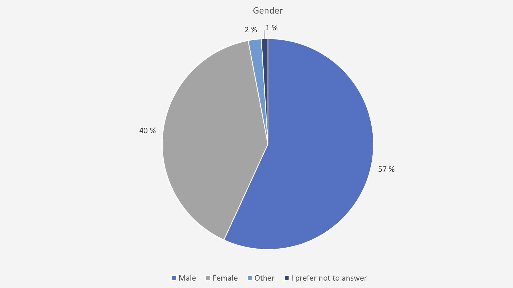
Despite the small presence of respondents whose gender identity diverges from the binary
standard, their presence was still taken as a positive sign that the survey reached a
community that is often neglected in the design of products and solutions. Additionally, the
fact that there was no absolute prevalence of a single gender was considered a step forward
in the reach of our goal for a diverse pool.
In regards to age, over half (57.8%) of the respondents were aged between 18 and 24 years old (59), whereas 31.4% (32) were in the next age range of 25-39. A total of 5 users (4.9% were aged between 40 and 54; 4 (3.9%) users were over 55 and only 2 (2%) were younger than 18.
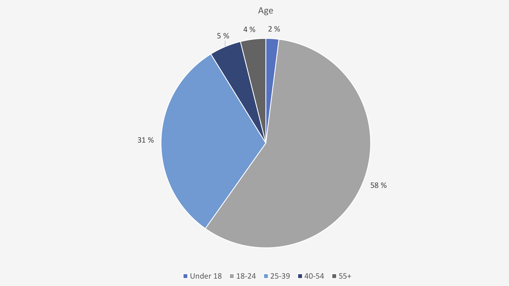
Taking into account that “[t]he younger the respondent, the more likely they are to use the Internet daily, and the less likely they are to never use it” (European Union, 2019, p.8), it is clear that the results are not optimal. Although the age group from 18 to 39 years old might be most likely to currently consume a product related to the internet, as they have the economic means to engage independently in the market and are simultaneously relatively young and therefore mostly online, reaching younger generations is a priority for us as product designers, as we would not like for our solution to become outdated and irrelevant to those who will soon be the main actors.
Regarding mapping the location of our respondents, the group reached an agreement that it was best to consider both their current location and their cultural background.
The first question aimed to map where our respondents had spent most of their lives. By avoiding to ask about one’s nationality, our goal was to have notions of their cultural background such as potential access to internet throughout most of their lives, probable living standards, languages they most likely speak. As it was not the main scope of the survey, we opted not to ask more questions of the kind directly, leaving the replies we had as an indicator of how broad our reach may or may not be.

There were respondents from 19 countries, with a prevalence of 49% of people who lived most of their lives in Norway.
Despite the large number of respondents in the area concerned by the General Data Protection Regulation, our results seemed useful, as they show users from other countries that were not encompassed by the Special Eurobarometer 487a report . Although a wider reach would be ideal, the results still seemed relevant so as to expand on the information we had.
Regarding the place of residence, its importance relates to the internet regulations in force. Although many of our subsequent questions brought about rights pertaining to European regulations, the scope of the survey was still transcontinental. In fact, the product the group is developing relies partially on rights and policies enforced by the General Data Protection Regulation. A much higher concentration was noticeable on the question regarding people’s current country of residency, showing that 73 % had Norway as their country of residency, making it less diverse than ideal.
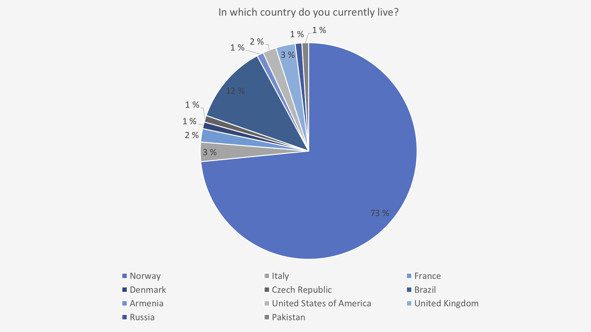
Part 2 - You and the Internet
In the second section, the goal was to understand respondent’s online behaviour. Both objective questions and hypothetical cases were used so as to achieve that goal.
The first question was about the frequency of internet use, with 99% (101) of respondents saying they accessed it every day and only 1 (1%) doing it less than once a month. The aim of this question was to evaluate how familiar our respondents were likely to be with the internet, taking exposure to it as the main factor.
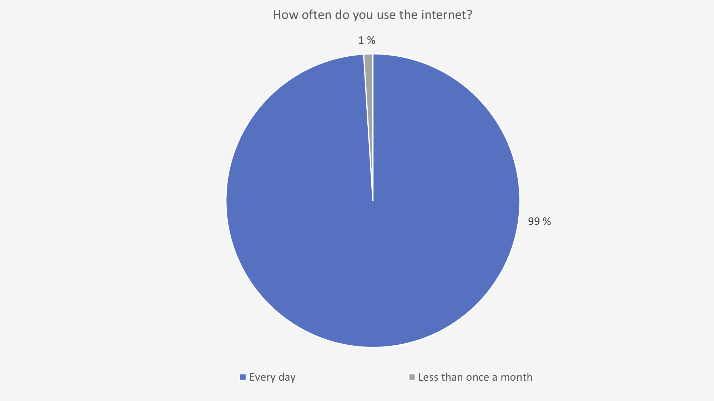
Following, the respondents were required to evaluate their opinions in some hypothetical scenarios. Such scenarios were, in fact, built on the basis of real privacy policies from big websites or softwares that are widely used.
Question number one was: You create an account on a website where you can write public posts that may include pictures or videos. Every time you are on that website, information about the device you are using, the application version and even your precise location is collected. Your private personal data is shared with third-party service providers. After some months of use, you delete your account, hoping to erase all traces of what you had posted. However, the information you had previously made public is still retained.Not long after, the company goes bankrupt. Your information is sold as part of the transaction. How do you feel?
This question was based on Twitter’s privacy policy , which states:
“[…] we use a variety of third-party services to help operate our services, such as hosting our various blogs and wikis, and to help us understand the use of our services, such as Google Analytics. We may share your private personal data with such service providers […]” “In the event that we are involved in a bankruptcy, merger, acquisition, reorganization, or sale of assets, your personal data may be sold or transferred as part of that transaction” “Keep in mind that search engines and other third parties may still retain copies of your public information, like your profile information and public Tweets, even after you have deleted the information from our services or deactivated your account.”
Fifty percent of respondents (51) said “ If I knew this, I would have been thinking twice about giving my consent”, followed by 16.7% (17) which stated “If I knew this, I would never have given my consent”. Sixteen people (15.7%) said they do not care, whereas 11 (10.8%) partially agreed with their policy and actions and 7 (6.9%) fully agreed with them.
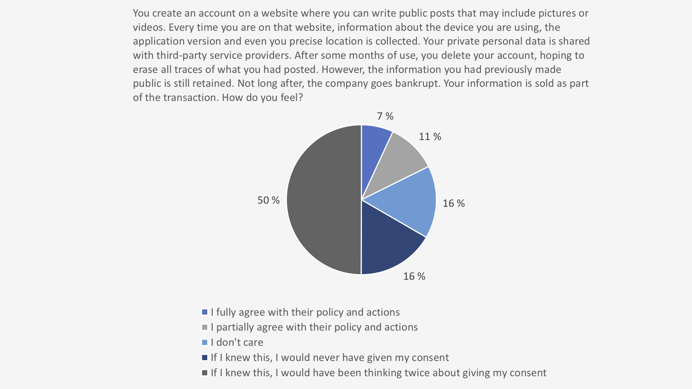
The second case was based on Instagram’s data policy , which claims
“when you share, post, or upload content that is covered by intellectual property rights (like photos or videos) on or in connection with our Service, you hereby grant to us a non-exclusive, royalty-free, transferable, sub-licensable, worldwide license to host, use, distribute, modify, run, copy, publicly perform or display, translate, and create derivative works of your content (consistent with your privacy and application settings). You can end this license anytime by deleting your content or account. However, content will continue to appear if you shared it with others and they have not deleted it”
The full question was “ You create an account on a social network where you post your pictures and videos. That social network then decides to give another company a license authorizing them to use the images you have posted without paying you anything. They have the right to modify your pictures and videos however they like, and they can also use, distribute, copy them and so on. What is your opinion?”
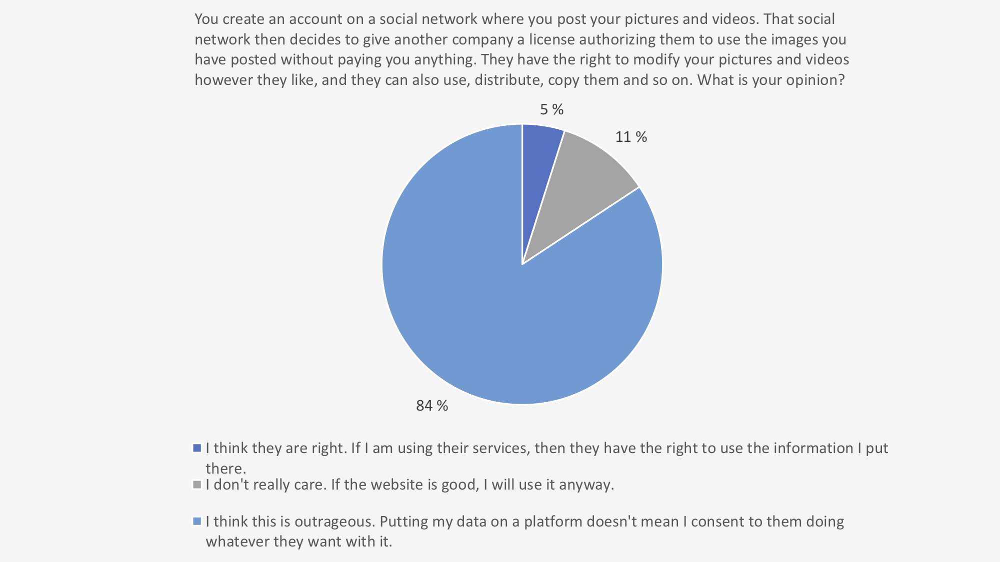
Results showed 84.3% (86 respondents) “ think this is outrageous. Putting [their] data on a platform does not mean [they] consent to [the platform] doing whatever they want with it.”. Eleven respondents (10.8%) “don’t really care. If the website is good, [they] will use it anyway” and 4.9% (5) voted “I think they are right. If I am using their services, then they have the right to use the information I put there”
The final situation presented was based on iTunes’ terms and conditions , which state
“Apple shall use reasonable efforts to protect information submitted by you in connection with the services, but you agree that your submission of such information is at your sole risk, and you hereby release apple from any and all liability to you for any loss or liability relating to such information in any way. Apple does not represent or guarantee that the services will be free from loss, corruption, attack, viruses, interference, hacking, or other security intrusion, and you hereby release apple from any liability relating thereto. You shall be responsible for backing up your own system, including any content acquired or rented through the services.”
The full question posed in the survey was: “You use a music provider service to buy several hundreds of dollars’ worth of tracks, using your credit card information saved on the service. The service also provides the function of redownloading the content you have purchased, in case you change devices. One day, the service provider is hacked, your private information is stolen and all of your purchase history is erased. You lose all the songs you had purchased, in addition to have your personal data stolen. The website claims not to be responsible for anything, including providing you with a backup of the songs you had downloaded. What is your opinion?”
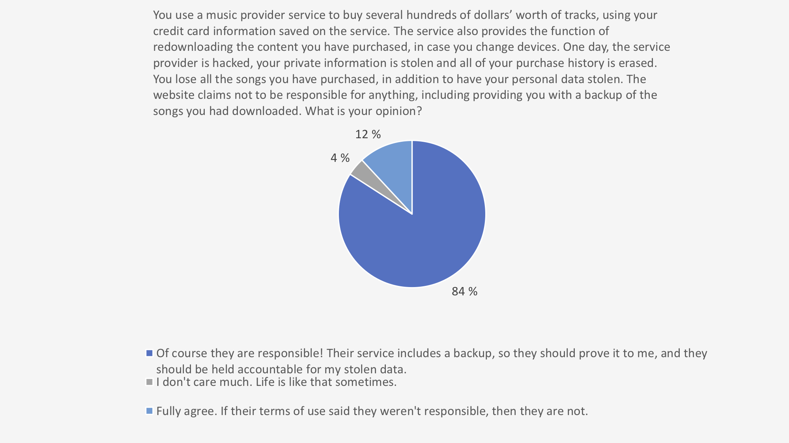
Eighty-five respondents (84.2%) said “Of course they are responsible! Their service includes a backup, so they should provide it to me, and they should be held accountable for my stolen data”1. Twelve respondents (11.9%) stated that they “fully agree. If their terms of use said they weren’t responsible, then they are not”. Finally, 4 (4%) claimed they “don’t care much. Life is like that sometimes”.
Part 3 - You and your rights
The final section aimed at understanding how aware respondents are (or believe they are) in relation to laws and regulations in the field of data protection, as well as their opinions and behaviours in that regard. Most of the rights taken into consideration in the survey are based on the General Data Protection Regulations (European Parliament, 2016). Questions, however, were shaped in a way that respondents who knew about the existence of a certain right but not within their country could express that.
The first question was aimed at self-evaluation in relation to one’s knowledge about laws or regulations regarding data protection in the respondent’s country. The aim was to assess whether consumers could potentially be interested in our project. After all, users who consider themselves aware of laws and regulations they are subjected to, and believe those are enough to protect their data privacy, will not be interested in a product aiming at protecting their online information.
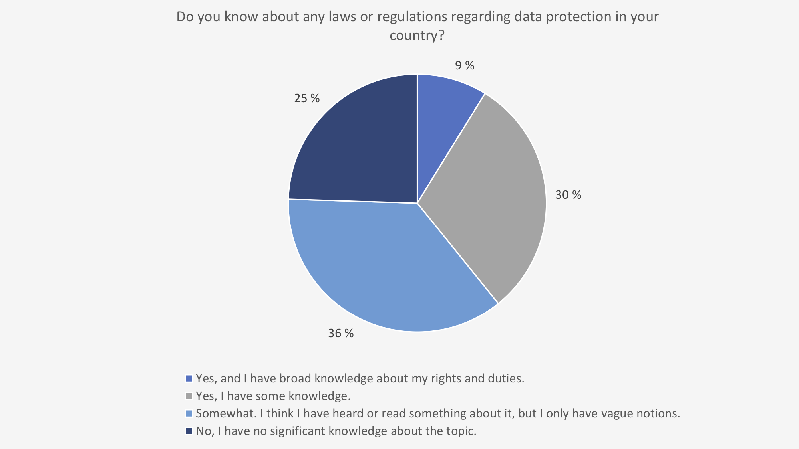
Out of 102 respondents, only 9 (8.8%) said “ Yes, and I have broad knowledge about my rights and duties”, with 31 (30.4%) asserting “Yes, I have some knowledge”. The most voted response was “Somewhat. I think I have heard or read something about it, but I only have vague notions”, with 37 (36.3%). The remaining 24.5% (25) voted “No, I have no significant knowledge about the topic”.
The second question of the section was also aimed at self-evaluation, this time about the possibly biggest source of the issue of data privacy: terms and conditions, which users often agree to without fully and thoroughly reading. This point was shown by our results, with a majority of 30.4% (31 respondents) never reading them and 28.4% (29) almost never reading or partially reading through them. Nineteen respondents (18.6%) mostly only read terms and conditions partially, while 11 (10.8%) partially read them and 10 (9.8%) have sometimes read them thoroughly, but mostly read them only partially. Finally, a mere 2% (2) claimed to always read terms and conditions thoroughly.
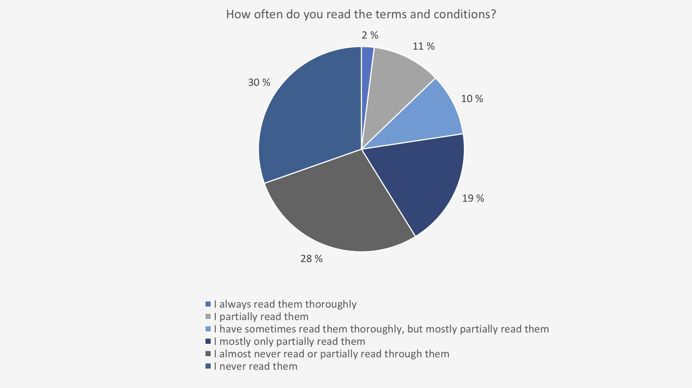
As it was already expected users would rarely fully and thoroughly read the terms and conditions, the following question enquired about the reasons for such habits. Respondents were allowed to choose multiple options among the original possible responses:
- I find them too long to read (87, 85.3%)
- I find them unclear or difficult to understand (48, 47.1%)
- It’s enough for me to see that a website has a privacy policy (2, 2%)
- I think the law will protect me in any case (7, 6.9%)
- I don’t think it’s important to read them (4, 3.9%)
- I don’t think the website will honour the privacy policy (15, 14.7%)
- I don’t know where to find them (0, 0%)
- I don't know (5, 4.9%)
The questionnaire, in addition, allowed for users to submit their own reasons. The following ( ipsi literis ) were submitted by users themselves (each with 1 respondent, corresponding to 1%):
- The legalese used in privacy statements and other Terms of Services is deliberately heavy and nonsensical to disencourage users from reading it. The corporations know.
- The sentencing are often too heavy and it gets difficult to understand.
- I have to do it to be able to use the product that I need to use. So sadly it's how the world works now.
- I'm forced to agree with the statements
- The terms and conditions never allow us to modify their content, so you must agree with all of them of you don't use the platform at all. In most cases, altough i find them very invasive, I still gotta use some website/social media to interact with people or even to publicize my job, so i'm forced to agree with the terms and conditions.
- Too long
- Too lazy
- I don't have time
- It is time consuming after GDPR implement, since there is a pop-up privacy policy on every website each time someone enters. But I tend to read more carefully information about access on certain apps, and sometimes when I am creating a new profile.
- I don't believe in the efficiency of the legal system anyway
- They're made with base in another states constiyution
- They are always the same
On the following question, respondents were enquired regarding how much control they feel they have over the information they provide online, including, for example, the ability to correct, change or delete such information. Only 2% (2) felt they had complete control, whereas 17.6% (18) believe they have partial control. The biggest group (44.1%, 45 respondents) the control they have depends on the website or application, and the second biggest portion (24.5%, 25 respondents) feel they have no control at all. Finally, 12 respondents (11.8%) did not know.
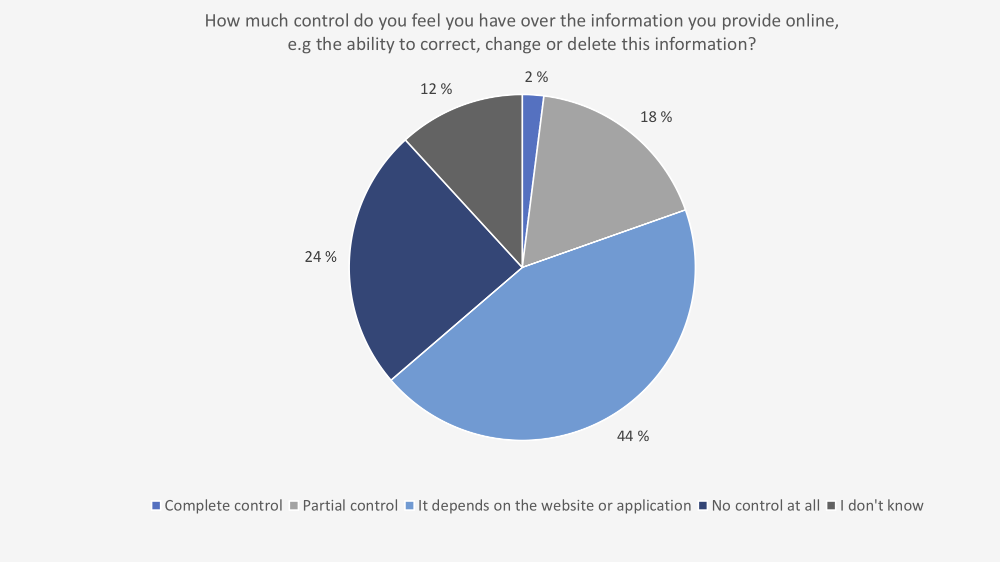
Building up on the notion of control over information, respondents were asked about how concerned the were about not having complete control over the information they provide online. Four respondents (3.9%) are not at all concerned, while 6 (5.9%) did not know. Thirty-four (33.3%) are not very concerned, 48 (47.1%) are fairly concerned and 10 (9.8%) are very concerned.
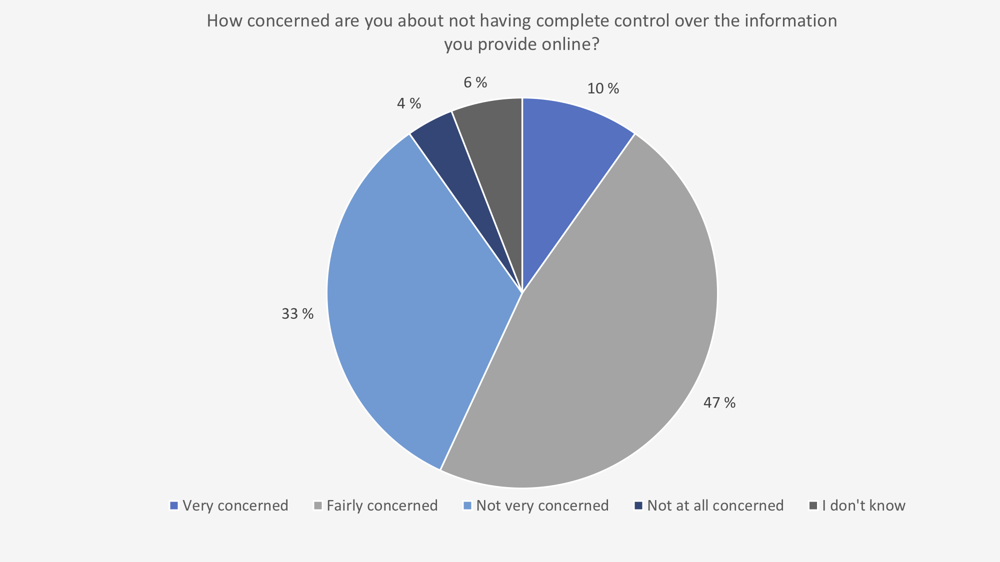
The following question is central to the development of our project. Respondents were asked about whether they would like to have more control over their information and data online. Results showed that a significant majority (73.5%, 75) would like to have more control, whereas 20.6% (21) would maybe want it. Six (5.9%) respondents did not care, where 0% answered either “no” or “I don’t know”.
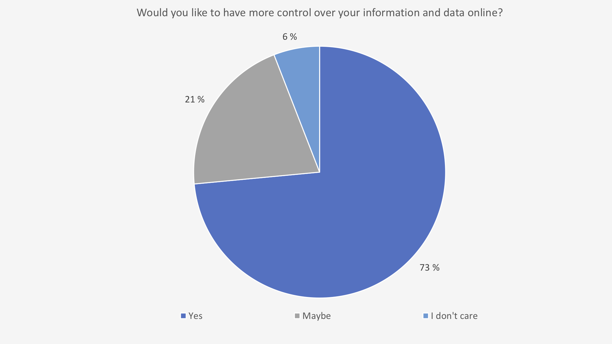
Regarding who has access to one’s information and data online, an even bigger percentage (84.3%, 86) responded they would like to have more control. Eight (7.8%) respondents would maybe want it, whereas 2 (2%) do not want it and 4 (3.9%) do not care. Two respondents (2%) did not know.
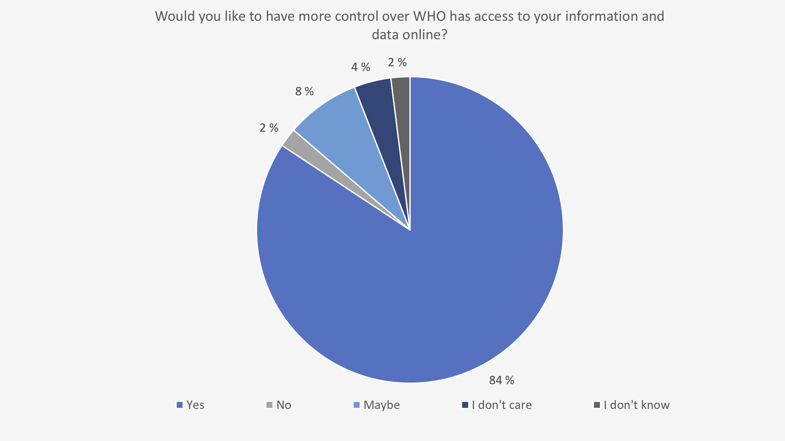
The following question aimed to assess how often people believe they are informed about the conditions of the collection and further uses of their data when they are asked to provide personal information. Thirteen (12.7%) respondents said they are always informed and 44 (43.1%) believe to sometimes be so, whereas 28 (27.5%) assert they only rarely are informed and 8 (7.8%) claim to never be informed. Eight (7.8%) did not know and 1(1%) said they are never asked to provide information.
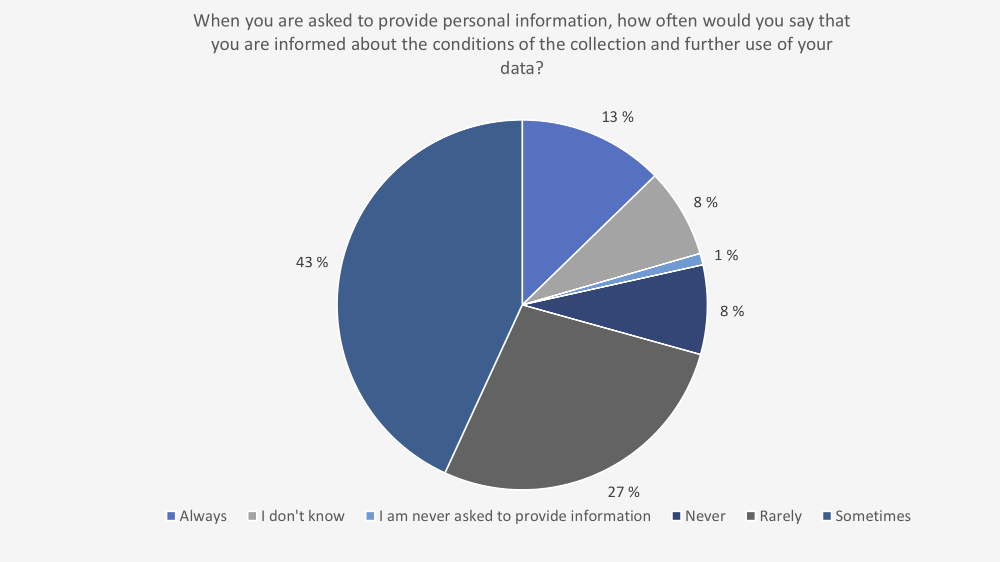
On the matter of specific rights one might have, the first question was regarding one’s awareness of the right to access their data. Fifty-four respondents (53%) said they have heard of it, among which 12 (11.8%) have exercised it and 42(41.2%) have not done so. Conversely, 35 (34.3%) have not heard of such a right, 11 (10.8%) do not know and 2 (2%) have heard of it, but live in a country where the right is not implemented.
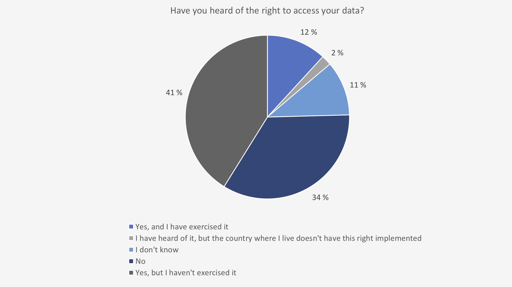
Regarding the right to correct wrong data, a majority of people have either not heard of it (45.1%, 46) or do not know (14.7%, 15). Conversely, 4.9% (5) have heard of and exercised it, while 33.3% (34) have not exercised it despite being aware of it. Finally, 2% (2) have heard of it, but live in a country where the right is not implemented.
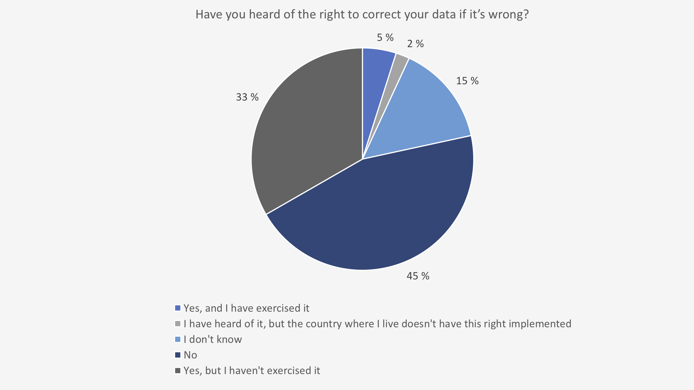
The right to object to receiving direct marketing - here defined as a for of advertising where one is contacted directly by, for example, email or text messages - was the most exercised one (43,1%, 44). Another 15.7% (16) have heard, but not exercised it, whereas 33.3% (34) have not heard of it. Seven (6.9%) respondents did not know and one (1%) has heard of it, but lives in a country where it is not implemented.
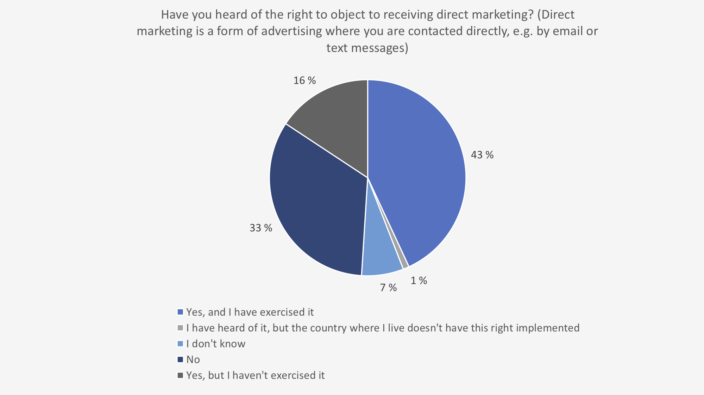
In regards to the right of having one’s data deleted and been forgotten, 43.1% (44) have heard about it, but have not exercised it, while 12.7% (13) have both heard about and exercised it. One (1%) respondent has heard of it despite liking in a country where the right is not implemented, while 10 (9.8%) do not know and 34 (33.3%) have not heard of it.
Regarding these results, one question should be raised: for those who have exercised the right of deleting their data, has it truly been deleted? Taking into account some of the aforementioned privacy policies, there is a possibility that, although they have asked for their information to be erased, it could have been saved by third parties, who do not receive such a request when a user, for example, deletes their profile on a social network.
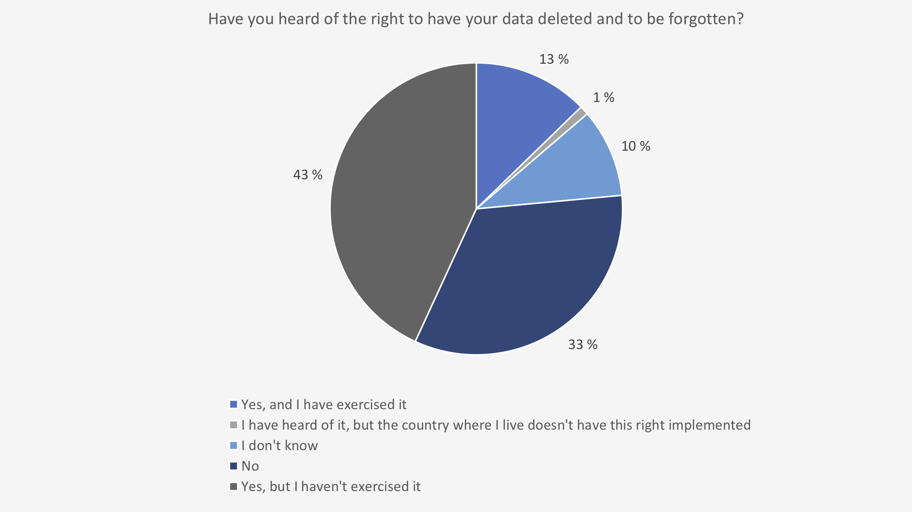
The second least known right was that of having one’s data moved from one provider to another. Seventy-one (69.6%) of respondents have not heard about it, while 7 (6.9%) do not know. Only 23 (22.5%) have heard of it, among which 15 (14.7%) have not exercised it and 8 (7.8%) have done so. One single respondent (1%) has heard of it despite living in a country where the right is not implemented.
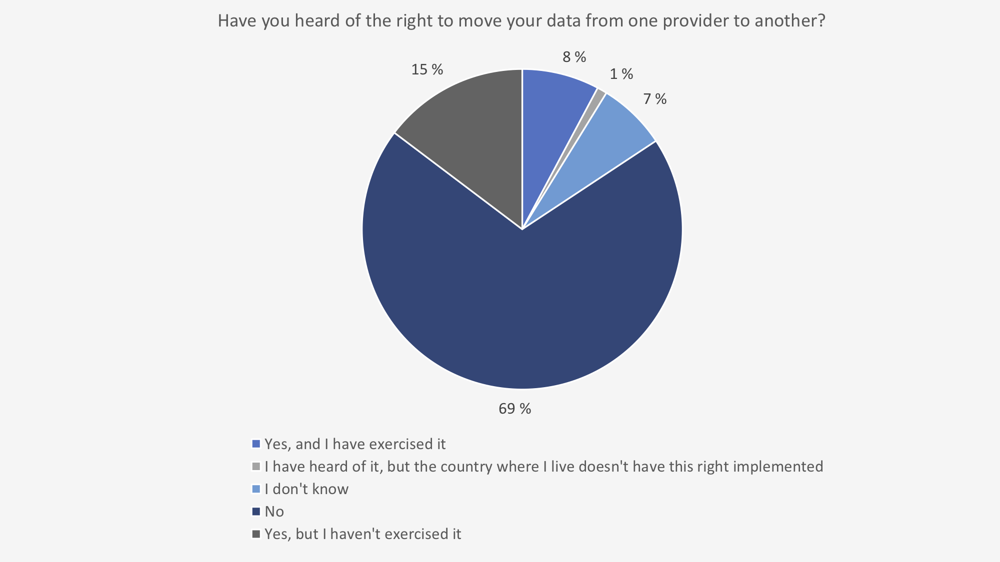
The final right users were inquired about was also the least known one. Only 18 (17.6%) have ever heard of it, of which 4 (3.9%) have exercised it. Thirteen respondents (12.7%) have not exercised it, despite being aware of its existence, and one 1(1%) lives in a country where the right is not implemented. In contrast, 75 people (73.5%) have never heard of such a right, with an additional 8.8% (9) of respondents not knowing.
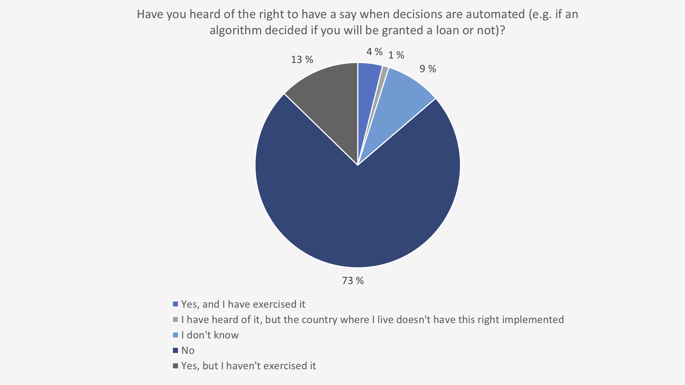
Conclusion
This research aimed at understanding people’s awareness of their rights in regards to their online data, as well as their interest in having more control over it. The goal was to reach a pool of respondents from more than just the European Union, as done by the Special Eurobarometer 487a (European Union, 2019), so as to assess not only if data protection is a concern, but also if it is a global one.
Although still mostly centered in the European continent due to the background of respondents, there was a certain level of diversity that allowed for us to draw preliminary conclusions about the global view on online privacy. As most of the answers suggest, individuals are, in fact, concerned at least to a certain extent with their privacy. They are often not willing to give up on services that may threaten it or spend time ensuring they fully understand all conditions around the use of a certain tool or website, but they are overall not oblivious to or unconcerned with the risks.
Considering that there seems to be a market for solutions that concern protecting one’s online privacy, and that people do not seem to want to go to great lengths to ensure such protection, we believe that developing an application such as DataManage would be in the general interest. It could, in fact, allow people to have power over their own data through only a few clicks, minimising the amount of effort to put into action rights that people are often aware of but do not exercise regularly.
Sources
Apple (Last updated May 13, 2019) Apple Media Services Terms and Conditions. Retrieved from
European Union (April 27, 2016) REGULATION (EU) 2016/679 OF THE EUROPEAN PARLIAMENT AND OF THE COUNCIL of 27 April 2016 on the protection of natural persons with regard to the processing of personal data and on the free movement of such data, and repealing Directive 95/46/EC (General Data Protection Regulation). Retrieved from
European Union (June, 2019) Special Eurobarometer 487a – March 2019 “The General Data Protection Regulation”. Retrieved from
Instagram Inc. (Last updated April 19, 2018) Data Policy. Retrieved from
Twitter, Inc. (May 25, 2018) Twitter Privacy Policy. Retrieved from